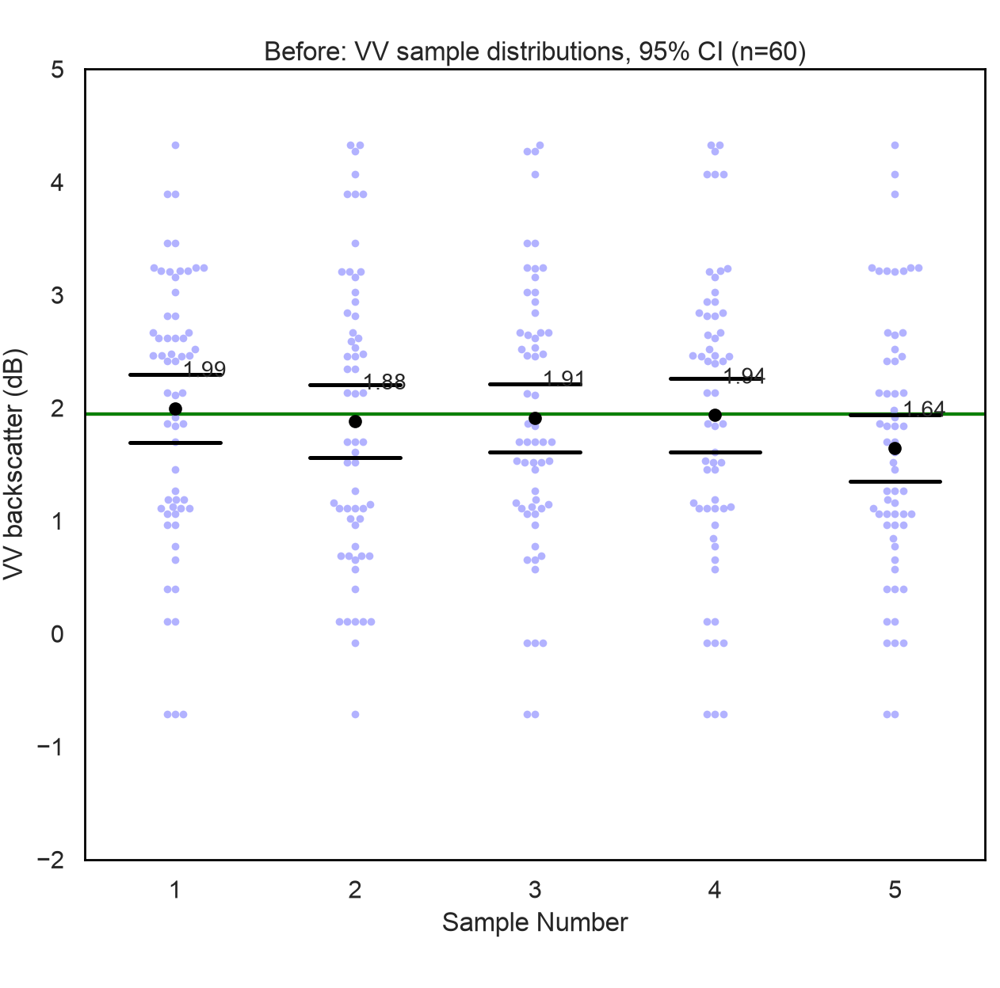
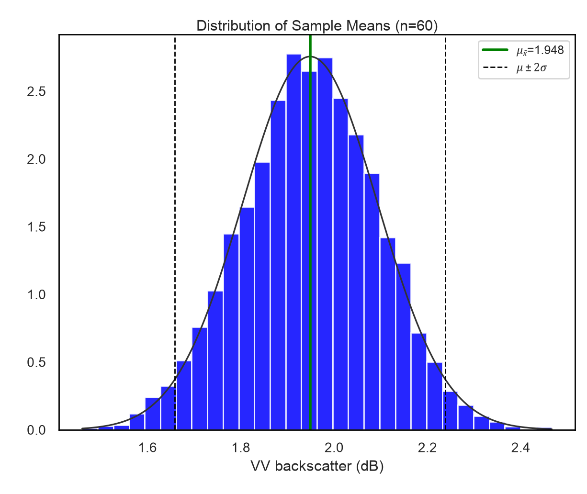
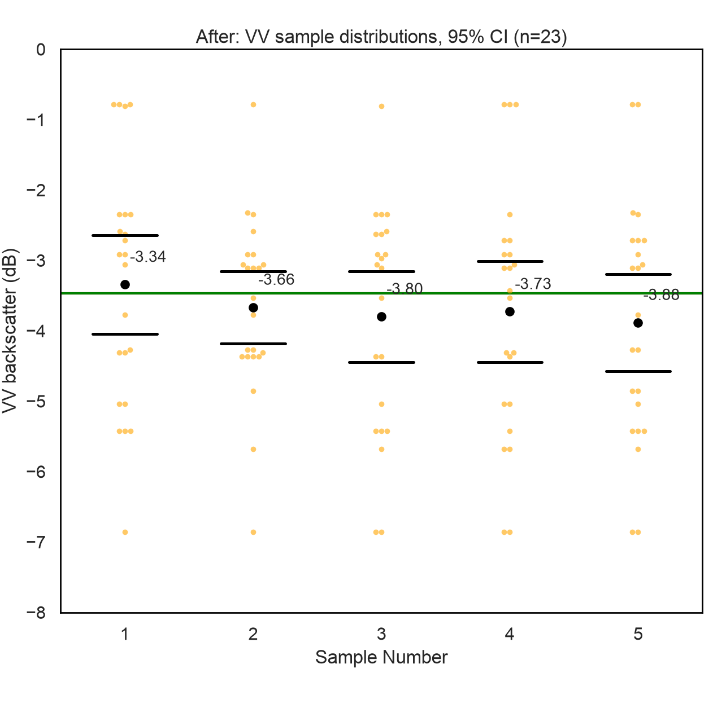
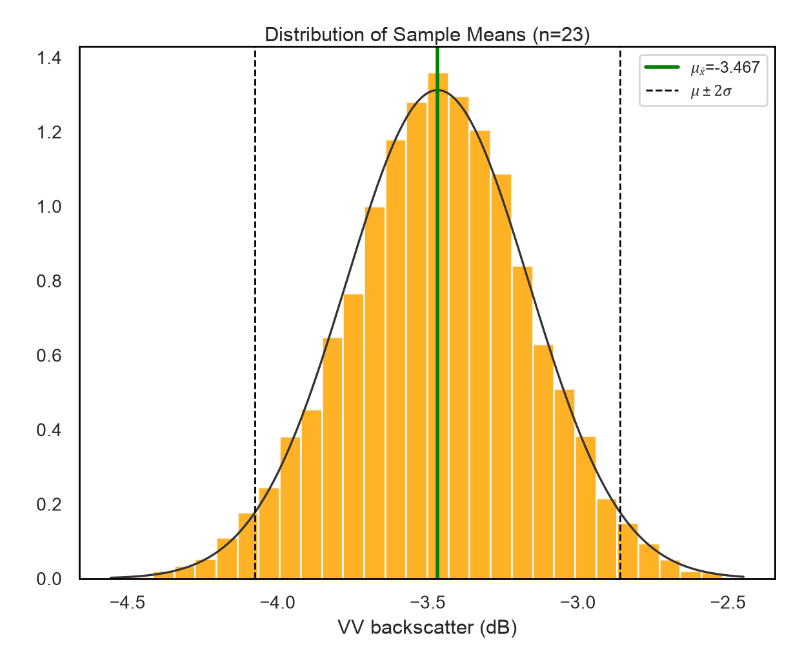

BASC0005 Quantitative Methods 2: Data Science and Visualisation
Ollie Ballinger
Problem
Satellite imagery is used extensively to detect damaged buildings. The highest levels of accuracy are generally achieved using Deep Learning and Very High Resolution optical satellite imagery. However, such approaches have significant limitations:
Financially and computationally expensive
$23/km2, so $13.9 million for all of Ukraine
Optical imagery is not consistently available
High-resolution imagery must be tasked
Clouds.
Neural Networks require retraining to be accurate in different geographies.
Outline
Case Study
Confidence Intervals
The T-Test
Bayes’ Theorem: a brief look
2. Confidence Intervals
Sampling Error
If multiple samples are taken from the same population, there still will be some difference between the sample means.
This difference is called sampling error
The hypothesis test provides a standardized, formal procedure for determining whether the mean difference obtained in a research study is significantly greater than can be explained by sampling error
CLT Recap
If you take a big enough (usually n>30) random sample, you can safely assume that 95% of the time,
Thepopulation meanwill lie within two standard errors of the observedsample mean.
If you have one sufficiently large random sample, you can ASSUME that the distribution of sample means will be normally distributed.
You can ASSUME that the mean of your sample has a 95% chance of falling within 2 standard errors of the population mean




3. The T-Test
Independent-Measures Designs
The independent-measures design is used in situations where a researcher has no prior knowledge about either of the two populations (or treatments) being compared.
In particular, the population means and standard deviations are all unknown.
Because the population variances are not known, these values must be estimated from the sample data.
The purpose of a T-test is to determine
whether the sample mean difference indicates a real mean difference between the two populations or
whether the obtained difference is simply the result of sampling error.
4. Make a Decision
The T-statistic from our T test is 15.8, which exceeds the critical value of 1.96.
Therefore, we can reject the null hypothesis that there is no difference in mean VV backscatter before and after the strike at 95% confidence.
Interpretation:
In 60 images before and 23 images after the strike, the mean VV backscatter fell by 5.42 dB. The difference in these means is statistically significant at the 95% confidence level.
i.e., there is less than a 5% chance of observing such an extreme difference in means between these two groups due to random chance alone.
Control: Make a Decision
The T-statistic for the control pixel is −0.34. Its absolute value is less than the critical value of 1.96.
Therefore, we fail to reject the null hypothesis that there is no difference in mean VV backscatter before and after the strike.
Interpretation:
For this pixel, the mean VV backscatter changed by only 0.17 dB (9.49 dB before, 9.65 dB after).
The same test on a stable pixel nearby gives no signal. The large t for the damaged pixel is not a change in the whole area.
A Note of Caution
Hypothesis testing is the basis of modern scientific research.
They allow us to evaluate the likelihood of our test results being attributable to random chance.
But, statistically significant results can be misleading
Publication bias (a form of selection bias in academic publishing) is a real threat.
Bayes’Theorem suggests that many statistically significant research findings may be false.